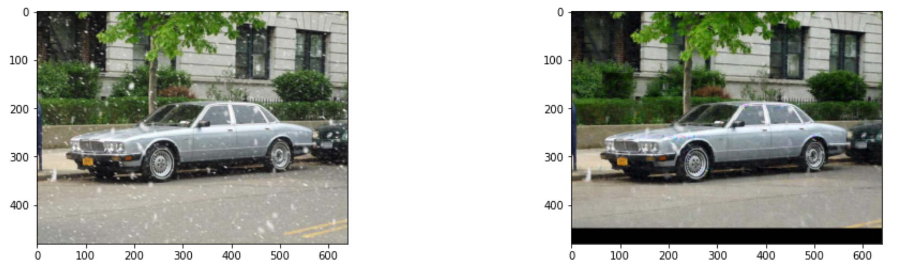
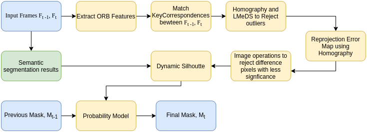
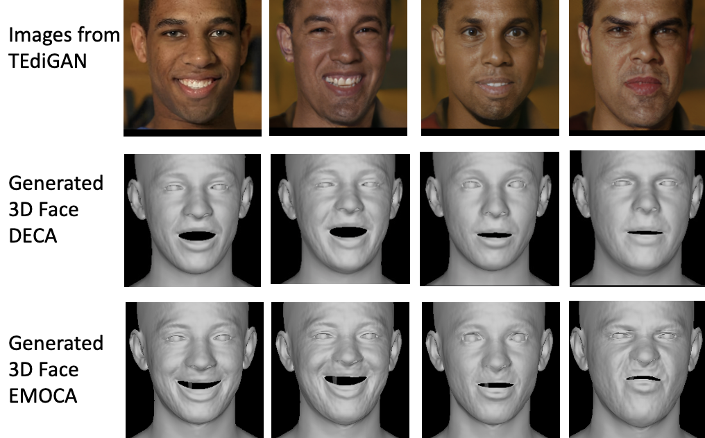
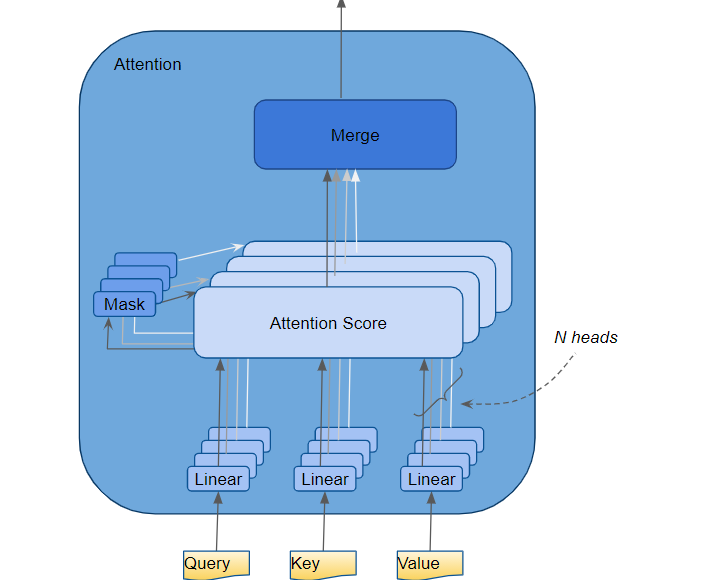
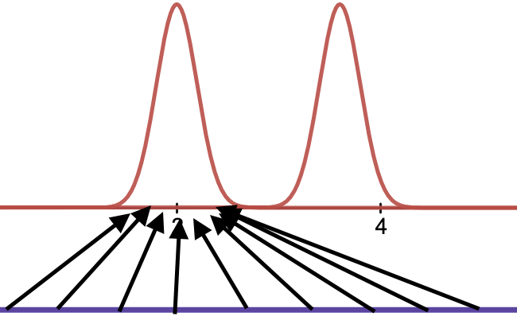

Master's in Computer Science - Expected Dec 2022.
University of California Los Angeles(UCLA)

Srinath Naik
Interests
Anything which stimulates some thought :) Broadly interested in Machine Learning,
Computer Vision, Artificial Intelligence and their applications into Robotics.
Computer Vision, Artificial Intelligence and their applications into Robotics.
Contact
srinath(at)cs(dot)ucla(dot)edu
Projects

DeSnowNet : Context-Aware Deep Network for Snow Removal
This work aims to implement a paper on de-snowing and suggest potential improvements and future directions. The proposed method uses modular neural network and handles various scales of snow particles by using large receptive fields based on dilated convolutions. It also presents results obtained by training on a reduced dataset and light-weight network.
- Link to Project Report

Static ORB Extractor for Visual SLAM
Despite significant progress in development of feature based visual SLAM systems, they exhibit poor performance when dynamic objects are present in the scene. This under performance can be attributed to using all the extracted feature points for location and pose estimation irrespective of whether they correspond to static/dynamic objects. In presence of dynamic objects, the calculated projection matrix to map from one frame to the next will be inaccurate due to excessive shift of features, there by leading to poor estimation. In this paper, we propose Reprojection Error Map for finding the dynamic mask in the scene uing the ORB keypoint correspondences. We describe the three methodologies we have developed for this task and their drawbacks. Finally, we present evaluation of our approaches on dynamic object based scenes in TUM and KITTI datasets.
- Link to Project Report

Script to 3D Animation
Artificial synthesis of human facial models continues to be an active area of research, sitting at the intersection of Computer Vision, Computer Graphics and Artificial Life. Spanning across various fields from medicine to film, the key task remains generating expressive and accurate three- dimensional renderings of human faces. Interestingly, facial synthesis has also seen active interest in the two-dimensional domain, with an increasing use of Generative Adversarial Network (GANs) to generate and manipulate human face renderings. This project thus attempts to take a step towards combining the research in these various disciplines, integrating the fields of Natural Language Processing, 2-D text guided manipulation, and 3-D model capture and rendering. Specifically, this project attempts to create a “text-to-3D-model” pipeline, generating three-dimensional faces to convey the emotion carried by a piece of text.
- Link to Project Report

Sentiment Analysis on Twitter Data
Sentiment analysis, the task of identifying the sentiment underlying a selection of text, is a classically challenging natural language processing (NLP) task. This task is difficult for both machines and humans in many cases. For example, in the case of written text, it is challenging to determine an author’s sentiment given that intonation is not represented well in written text. Sentiment analysis therefore serves as a suitably rigorous benchmark for determining a system’s capability to reason about ideas conveyed through text that are not readily evident from only the vocabulary used. This task also has numerous application areas and is especially useful for downstream tasks such as determining potential consumers’ overall attitudes towards and intentions regarding a particular product or service. In this project, we undertake the task of defining a model architecture for sentiment analysis, training it on a domain-specific corpus, and analyzing its ability to identify sentiment in the training domain and in several others.
- Link to Project Report

Mode Collapse In Generative Adversarial Networks: A Survey
Generative models have progressed a long way into the history of machine learning. Broadly, these can be classified into explicit models where a potential probability distribution of the samples is calculated and implicit models in which the interaction is only through sampling. Though Generative Adversarial Networks are widely successful, there are some inherent problems such as non-convergence and mode collapse which limit its usage. In this paper, we focus on mode collapse in detail, address why it is a bottleneck on effectiveness and usage of GANs, discuss and summarize the different strategies in the literature followed by identifying open research directions.
- Link to Project Report
"It's better to live your own destiny imperfectly than to live an imitation of somebody else's life with perfection."